Create and configure Impact Modeler pipeline models
In Uptempo Campaign Management, marketers can use Impact Modeler to project how marketing activities will influence the demand pipeline and drive revenue over time.
To generate these projections, an administrator must configure at least one demand generation pipeline model. A pipeline model maps how prospects progress from an initial lead to a closed/won deal. When users input the demand an activity is expected to generate, the model processes these inputs to forecast the resulting revenue and its timing.
You can create multiple models to continuously refine the performance metrics that power your projections. For example, if you gather more data about how fast deals move through the pipeline, you can create a new FY2026 model for current planning, while maintaining the previous FY2025 model for historical reference.
How a pipeline model works
Each pipeline model is built on three core components:
Pipeline structure: The sequential stages of your customer journey and sales pipeline.
Baseline funnel performance metrics: The baseline metrics for your sales process, including typical stage-to-stage conversion rates, velocity (time spent in each stage), and average closed/won deal size.
Segment-specific custom metrics: Custom adjustments to your baseline metrics. These are used for specific segments defined by a combination of dimensions, such as activity attribute values and activity types. For example, you can set custom metrics for cases like if the average deal size for a certain product is higher or lower, or if deals in a particular market close faster (or slower) than average.
The following screenshot shows a default setup of a pipeline model in Impact Modeler:

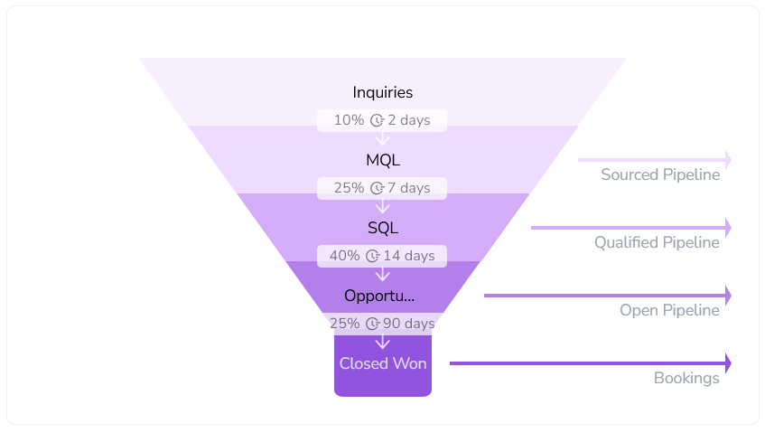
To build a pipeline model, you define the following parameters:
- Stage
Each stage represents a step in the customer's journey towards making a purchase. A pipeline usually has 2 to 10 stages, depending on your marketing and sales processes.
- Conversion rate
The typical percentage of leads that move from one stage to the next stage on the journey.
- Velocity
How long (in days) it takes the average lead to progress from one funnel stage to the next.
- Deal size
The average amount of revenue generated when you close a deal and successfully convert an opportunity into a customer.
When users input the demand an activity is expected to generate, Impact Modeler runs those inputs through the pipeline model. The model uses the values you have defined for these parameters to project the anticipated pipeline and revenue, and when it will be realized.
Segment-specific custom metrics
Conversion rates, velocities, and deal sizes often vary for different activities. To improve the precision of your projections, you can define particular segments in your pipeline model and then set custom metrics for these segments.
You can define a unique segment by selecting up to three dimensions. Your segment criteria can consist entirely of list-type activity attributes, or a combination of attributes and a single activity type group. For example, this screenshot shows custom conversion rates for a segment. The segment is defined based on the activity types in the Tactic activity type group (as the primary dimension), and the products in the Product attribute (as the secondary dimension):

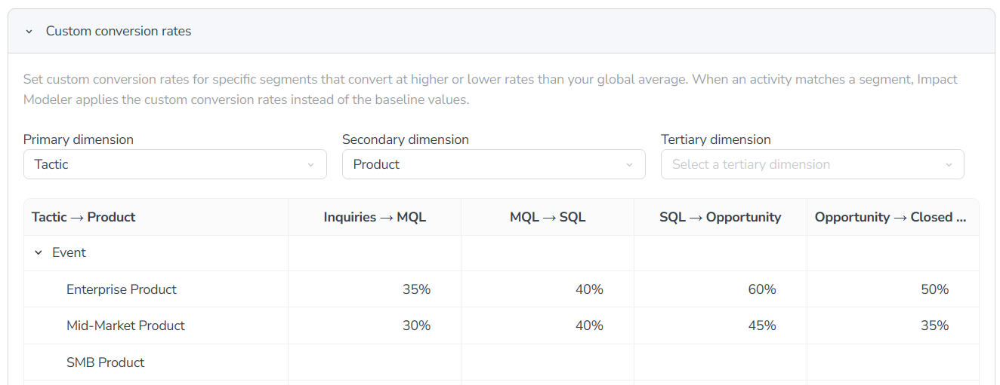
Whenever an activity matches a segment for which you have defined custom metrics, the pipeline model automatically uses these custom metrics (instead of the baseline metrics) to calculate pipeline projections.
- Example 1: Custom conversion rates
The baseline conversion rate from the Inquiries stage to the next stage (MQL) is set to 10%:
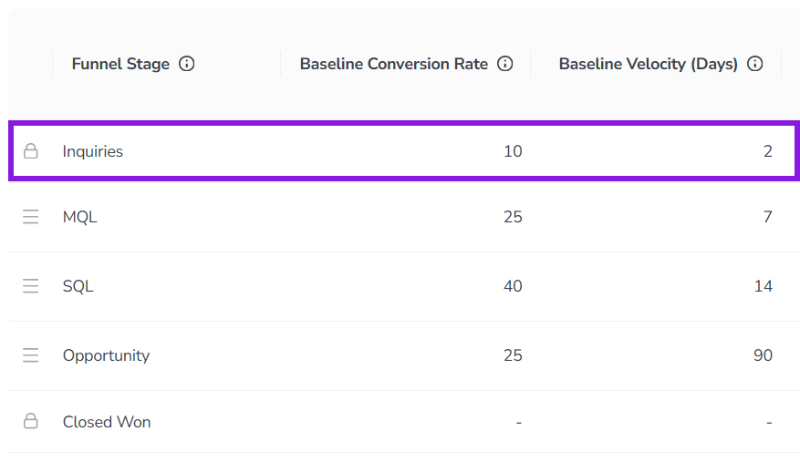
There are also custom conversion rates for several segments. These segments are defined using two dimensions: the Tactic activity type group, and the Product attribute.
When an activity has a type belonging to the Tactic activity type group, the conversion rate used for pipeline projections is determined by the product assigned to the activity:
For Enterprise Product, the custom conversion rate of 35% is used.
For Mid-Market Product the custom conversion rate of 30% is used.
For SMB Product, and for any other combination of a product and tactic for which no custom conversion rate is defined, the baseline conversion rate of 10% is used.
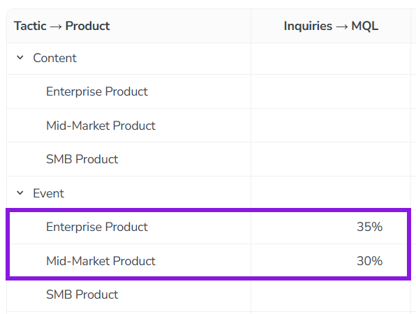
- Example 2: Custom velocities
The baseline velocity from the Inquiries stage to the next stage (MQL) is set to 2 days:
There are also custom velocities for several segments. These segments are defined using a single dimension, the Lead Source attribute.
The velocity used for pipeline projections is determined by the lead source assigned to the activity:
For Inbound, the custom velocity of 4 days is used.
For Outbound, the custom velocity of 10 days is used.
For Field Events / Trade Shows, the custom velocity of 14 days is used.
For Referral /Partner, and for any activity which has no value for this attribute (or does not have the attribute), the baseline velocity of 2 days is used.
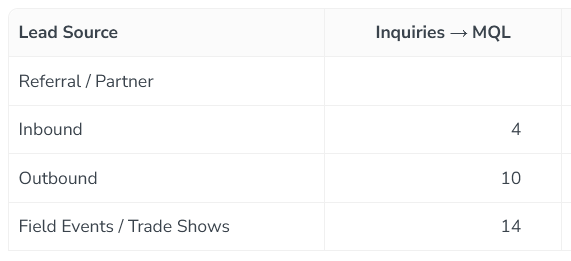
- Example 3: Custom deal sizes
The default baseline deal size is set to $45,000:
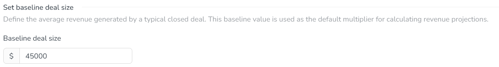
There are also custom deal sizes for several segments. These segments are defined using three dimensions: the Target Customer Segment, Region and Product Tier attributes.
When an activity is assigned to the Enterprise segment, the deal size used for pipeline projections is determined by the region and product tier assigned to the activity:
For North America, the custom deal sizes used are:
$125,000 for the Standard tier
$200,000 for the Premium tier
For EMEA, the custom deal sizes used are:
$95,000 for the Standard tier
$165,000 for the Premium tier
For South America, APAC, and any other combination of segment, region, and product tier for which no custom deal size is defined, the baseline deal size of $45,000 is used.
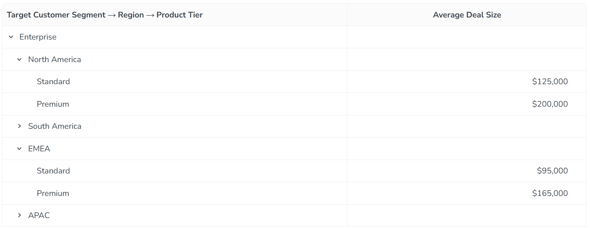


Create and manage pipeline models
By default, a new Uptempo instance contains a single pipeline model. To start using Impact Modeler, you can configure this default model and then activate it.
You can also create additional pipeline models, for example to adjust your pipeline metrics when you begin a new planning cycle. If you have multiple models, you can manage your models by setting which models are available for use, and removing models that are no longer needed.
Create pipeline models
You can create a new pipeline model at any time:
By default, new models start with empty settings, and you must manually configure all the model's parameters.
You can also create a new model by copying an existing model. This copies all baseline and segment-specific performance metrics from the source model to the new model.
Create a new blank pipeline model
In the
 Activities section, click
Activities section, click  Settings to open the Activity Configuration page.
Settings to open the Activity Configuration page.Click Measures > Impact Modeler to open the Impact Modeler settings page.
Click Models to open the Models panel:
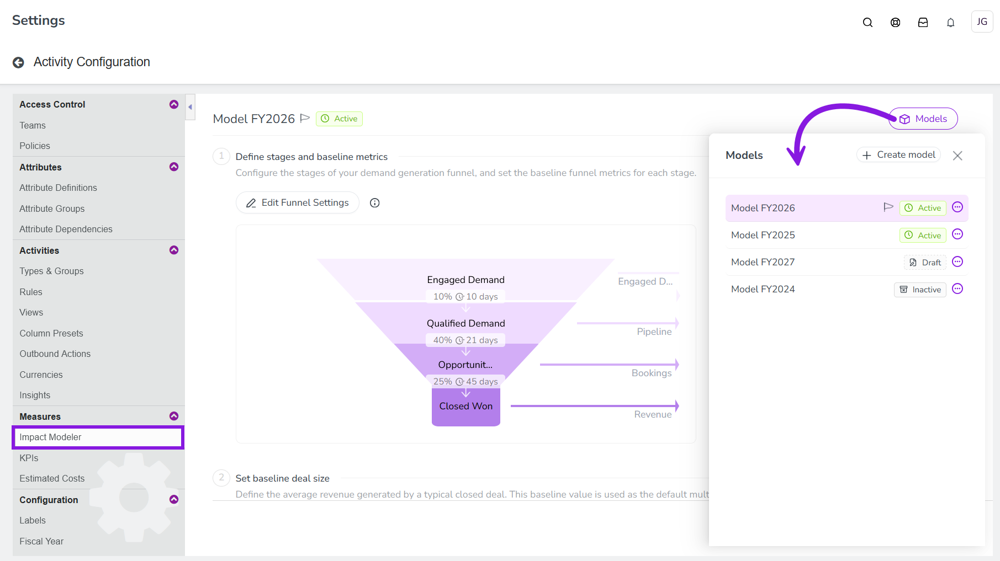
Click
 Create model.
Create model.
The new model is added to the Models panel, and its settings are displayed.
Before you can use this new model to generate projections on activities, you first need to configure it, then activate it.
Copy an existing pipeline model
In the
Activities section, click Settings to open the Activity Configuration page.Click Measures > Impact Modeler to open the Impact Modeler settings page.
Click Models to open the Models panel.
Place the pointer on the
 menu of the model you want to copy, then click Copy:
menu of the model you want to copy, then click Copy: 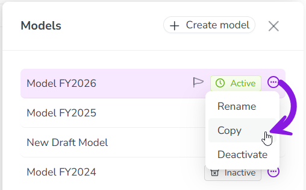
The new copied model is added to the Models panel, and its settings are displayed.
Activate, deactivate, and delete models
All new models are created in the Draft status, and are not yet available to be used by Impact Modeler. After you have configured a new model, you need to activate it to make it available for use. When a model is active, it can be used to generate projections in the Impact section of the activity details panel.
If there is more than one active model, the Impact > Planned tab displays a menu that allows users to switch between available active models:

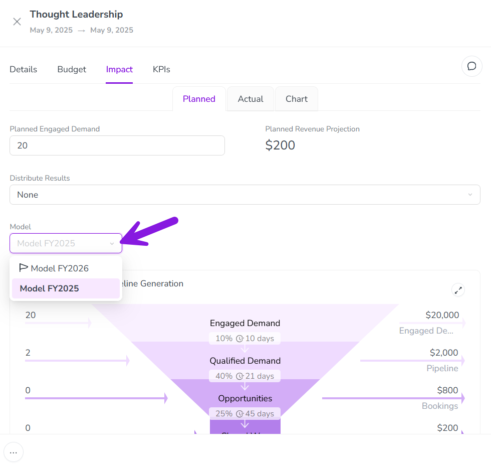
When there are multiple active models, you can choose which model is selected by default in this menu.
Activate a model
You can activate any model that has the status Draft or Inactive.
In the
Activities section, click Settings to open the Activity Configuration page.Click Measures > Impact Modeler to open the Impact Modeler settings page.
Click Models to open the Models panel.
Place the pointer on the
menu of the model you want to activate, then click Activate.To finish activating the model, click Activate model in the confirmation dialog.
The model is activated, and is displayed in the Models panel with the status Active. Active models are available for generating projections on activities with immediate effect.
If this is the only active model, activating it also enables the Impact tab on all activity types where Impact Modeler is enabled, and sets the model as the default for impact projections.
If a model should no longer be used for projections on new activities, you can deactivate it.
Deactivating a model removes it as a selectable option from the menu on the Impact > Planned tab on activities. To maintain historical data, a deactivated model remains selected on all activities where it was previously selected. If needed, users can switch any activity on which a deactivated model is selected to any currently active model.
Deactivate a model
You can deactivate any model that has the status Active.
In the
Activities section, click Settings to open the Activity Configuration page.Click Measures > Impact Modeler to open the Impact Modeler settings page.
Click Models to open the Models panel.
Place the pointer on the
menu of the model you want to deactivate, then click Deactivate.To finish deactivating the model, click Deactivate model in the confirmation dialog.
The model is deactivated, and is displayed in the Models menu with the status Inactive. Inactive models are no longer available for generating projections on activities with immediate effect.
If a model is unused and is no longer needed, you can delete it.
Delete a model
You can delete any model that is not currently selected on any activity, and has the status Draft or Inactive.
In the
Activities section, click Settings to open the Activity Configuration page.Click Measures > Impact Modeler to open the Impact Modeler settings page.
Click Models to open the Models panel.
Place the pointer on the
menu of the model you want to delete, then click Delete.To finish deleting the model, click Delete model in the confirmation dialog.
The model is deleted, and is immediately removed from the Models panel.
Rename models and set the default model
You can rename your existing models at any time, including if they are already in use.
Rename a model
In the
Activities section, click Settings to open the Activity Configuration page.Click Measures > Impact Modeler to open the Impact Modeler settings page.
Click Models to open the Models panel.
Place the pointer on the
menu of the model you want to rename, then click Rename.Enter the new name into the text field, then press Enter (or click anywhere outside the text field).
The new name is saved automatically, and is displayed immediately in both the Models panel and on the Impact > Planned tab on activities.
If you have multiple active models, you can set which model is used by default for projections on all newly created activities. This is useful if you create new model iterations for each planning cycle: set the new model as the default when the planning process begins to ensure it is used on all newly created activities from that point onward.
Set a model as the default model for projections
You can set any model with the status Active as the default model.
In the
Activities section, click Settings to open the Activity Configuration page.Click Measures > Impact Modeler to open the Impact Modeler settings page.
Click Models to open the Models panel.
Place the pointer on the
menu of the model you want to rename, then click Set as default.To finish setting the model as the default, click Set as default in the confirmation dialog.
The new name is saved automatically, and is displayed immediately in both the Models panel and on the Impact > Planned tab on activities.
Configure pipeline models
Configuration overview
To use a pipeline model to generate impact projections, you need to configure its parameters. The setup process consists of the following steps:
Set up pipeline structure: Define the stages of your demand generation funnel.
Set up baseline performance metrics: Specify the typical conversion rates and velocities between the stages, and the baseline deal size.
Optional: Set segment-specific custom metrics: Specify custom conversion rates, velocities, and deal sizes to use for specific segments instead of the baseline metrics.
Optional: Configure per-stage revenue projection: Choose if you want the model to generate pipeline value projections at intermediate stages of the funnel.
Set up pipeline structure
The stages of your demand generation funnel form the foundation of the pipeline model. The model's default funnel contains two stages:
The starting or "top of funnel" stage. The default name for this stage is Source.
The ending or "bottom of funnel" stage. The default name for this stage is Won.

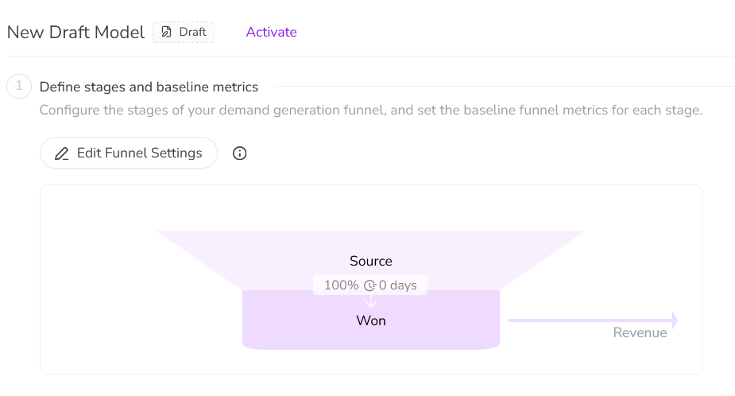
Between these two default stages, you can add as many additional stages as you need. You can name your funnel stages (including the two default stages) however you like. For example, a typical demand generation funnel consists of around five stages, and might look like this:
Inquiries
Marketing Qualified Lead (MQL)
Sales Qualified Lead (SQL)
Opportunity
Closed/Won
Add funnel stages to a model
In the
Activities section, click Settings to open the Activity Configuration page.Click Measures > Impact Modeler to open the Impact Modeler settings page.
Optional: The system automatically displays the settings for the default model. To configure a different model, click Models, then click on the model you want to configure in the Models panel.
Under (1) Define stages and baseline metrics, click
 Edit Funnel Settings to show the funnel settings table.
Edit Funnel Settings to show the funnel settings table.To add a new stage, click
Add Funnel Stage. A new row is added to the funnel settings table: 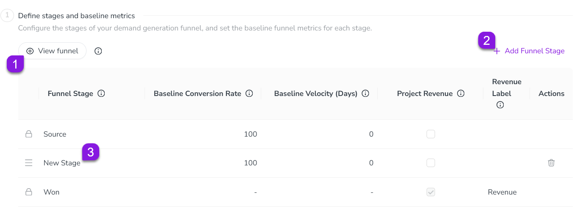
By default, newly added stages are named New Stage. To edit the name of a stage, click on its name under the Funnel Stage column. Type the name you want to use into the field, then click anywhere outside the field to finish editing.
Repeat steps 5-6 until you have added and named all the funnel stages you want to use.
To save and apply your changes, click Save changes.

Your changes to the model take effect immediately, and the funnel diagram is updated to reflect the new stages:

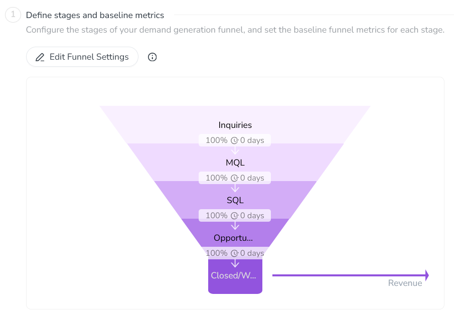
Set up baseline performance metrics
After you have set up the stages of your demand generation funnel, you can define the baseline stage-to-stage performance metrics. There are two metrics you need to define for each stage:
- Baseline Conversion Rate
The average percentage rate at which leads move from one stage to the next. For example, if 100 unqualified leads typically generate 25 MQLs, that's a 25% conversion rate between those stages.
- Baseline Velocity (Days)
The average number of days that a lead takes to move from one stage to the next.
You also need to set the global multiplier used for calculating pipeline and revenue amount projections. This is only set once for the whole model, not per stage:
- Baseline deal size
The average amount of revenue generated when you close a deal and successfully convert an opportunity into a customer.
Set a model's baseline performance metrics
In the
Activities section, click Settings to open the Activity Configuration page.Click Measures > Impact Modeler to open the Impact Modeler settings page.
Optional: The system automatically displays the settings for the default model. To configure a different model, click Models, then click on the model you want to configure in the Models panel.
Under (1) Define stages and baseline metrics, click
Edit Funnel Settings to show the funnel settings table.Use the Baseline Conversion Rate and Baseline Velocity (Days) columns in the table to enter the performance metrics for each stage:
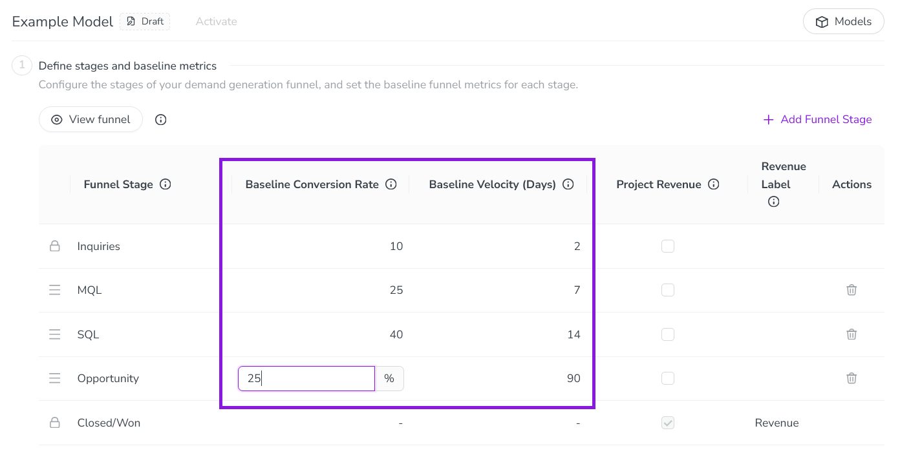
Under (2) Set baseline deal size, enter your average contract value amount into the Baseline deal size field.
To save and apply your baseline metrics, click Save changes.

Your changes to the model take effect immediately, and the funnel diagram is updated to reflect the metrics you set:

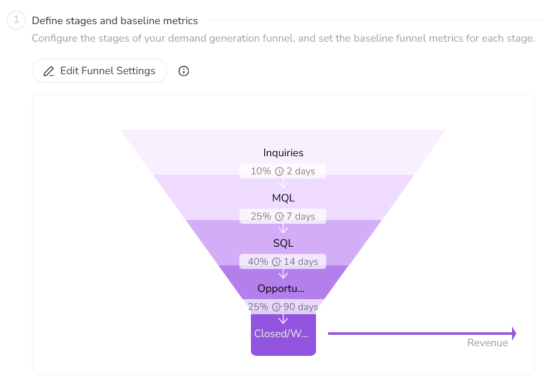
Optional: Set up segment-specific custom metrics
Baseline metrics are broad averages. If factors like conversion rate, velocity, and deal size vary significantly across your customer base, relying solely on the baseline metrics will limit the accuracy of your projections.
For more precise forecasting, assign custom metrics to specific segments. When an activity targets a defined segment (such as Enterprise prospects, which typically have slower velocities but larger deal sizes) the model automatically uses that segment's custom metrics instead of the baseline metrics.
In a pipeline model, you define segments using up to three dimensions. A dimension can either be an activity type group, or a list-type activity attribute (Drop-Down List or Multi-Select List). For each combination of values of the selected segments (such as activity types or attribute list options), you can define custom stage-to-stage conversion rates and velocities, as well as custom deal sizes.
Here are some examples of the types of segments you can define with different numbers of dimensions:
- Example 1: One Dimension
You can create large-scale segments based on just one attribute.
Example segment dimension:
Industry
Example dimension values:
Healthcare
Financial Services
Why:
Some industries have regulatory complexity that can significantly reduce velocity. For example, Financial Services and Healthcare can often have longer sales cycles due to regulatory compliance.
- Example 2: Two Dimensions
You can combine two dimensions to define segments with more granularity. This is useful for dimensions that are strongly correlated in terms of their impact on the funnel.
Example segment dimensions:
Product + Geography
Example dimension value combinations:
Product A + North America
Product A + APAC
Why:
Budgets and product-market fit can vary regionally. For example, a product might have a higher average deal size in North America, or prospects for the same product in APAC might take longer to go from SQL to Opportunity.
- Example 3: Three Dimensions
If your organization has high-quality historical performance data and the ability to analyze it in depth, you can use up to three dimensions to capture the most granular scenarios.
Example segment dimensions:
Product + Region + Channel
Example attribute value combinations:
Product A (SMB) + North America + Paid Search
Product B (Enterprise) + North America + Event
Why:
You might find that certain key attributes drive large variances in your demand funnel's metrics. For example:
For an SMB-focused product in North America, digital ads might generate few MQLs from a lot of inquiries, but lead to short sales cycles for comparatively small deal sizes.
For an Enterprise-focused product in the same market, in-person events like trade shows might drive much higher conversion rates and larger deal sizes than for the SMB-focused product — but these deals might also come with longer sales cycles.
Define segments and set custom performance metrics
In the
Activities section, click Settings to open the Activity Configuration page.Click Measures > Impact Modeler to open the Impact Modeler settings page.
Optional: The system automatically displays the settings for the default model. To configure a different model, click Models, then click on the model you want to configure in the Models panel.
Under (3) Configure segment-specific metrics, click on the type of performance metric for which you want to set segment-specific values to expand it. You can set custom conversion rates, velocities, and deal sizes:
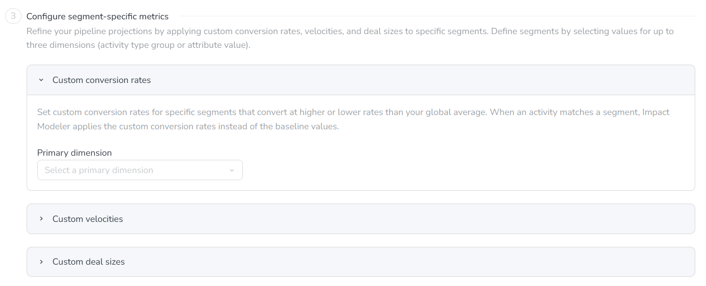
Use the Primary dimension menu to select the first dimension you want to use to define the segment. You can choose any activity type group or list-type activity attribute as a dimension.
After you select the primary dimension, a table is displayed with the selected dimension's values in the rows, and the transitions between funnel stages in the columns:
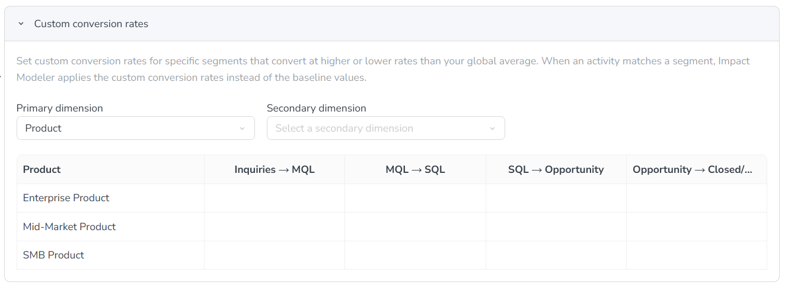
Optional: Use the Secondary dimension and Tertiary dimension menus to select additional dimensions to define the segment. When you select more than one dimension, every combination of values from the selected dimensions is added to the table as a row:
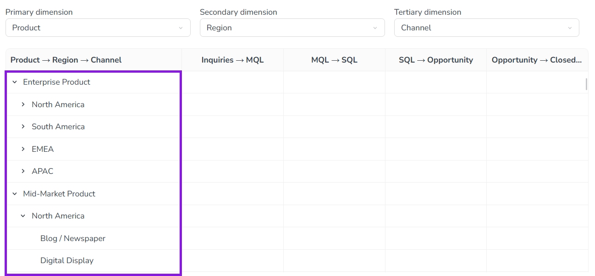
To set a custom metric for a dimension value combination, enter the metric into the table on its table row. The table's columns represent the different stage-to-stage transitions in your funnel: for example, you would enter a custom conversion rate between the Inquiries and MQL stages into the Inquiries → MQL column. Repeat this process for all custom metrics you want to enter for the selected type of performance metric.
Optional: Repeat steps 4-7 for the other performance metric types.
To save and apply your changes, click Save changes.


Your changes to the model take effect immediately. On all activities with an activity type or attribute value for which a custom metric has been defined, the custom metric is now used to generate projections. If an activity previously had a projection based on the baseline metrics, the projection is recalculated using the custom metrics.
Optional: Configure per-stage pipeline projection
By default, Impact Modeler projects revenue only for the final stage of the funnel (revenue generated by closed deals). If you want to see projections throughout the pipeline, you can optionally configure the model to calculate and show projections for other funnel stages as well.
For each stage where projection amounts are enabled, you can also set a custom label that reflects the terminology your organization uses for that stage, such as "Bookings".
When projections are turned on for a funnel stage, they are displayed on the details panel of all activities where Impact Modeling is enabled, on both tabs of the Impact section:
On the Planned tab, the funnel chart displays a projected amount beside each stage where projections are enabled.
On the Actual tab, the input table displays columns for recording stage-specific pipeline amounts.
Turn on projected amounts for a funnel stage
In the
Activities section, click Settings to open the Activity Configuration page.Click Measures > Impact Modeler to open the Impact Modeler settings page.
Optional: The system automatically displays the settings for the default model. To configure a different model, click Models, then click on the model you want to configure in the Models panel.
Under (1) Define stages and baseline metrics, click
Edit Funnel Settings to show the funnel settings table.To turn on projections for a stage, select the checkbox in the Project Revenue column on that stage's row.
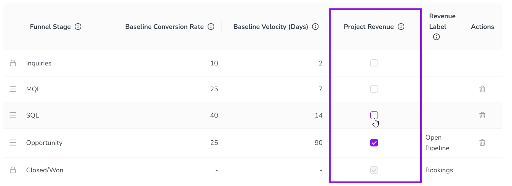
Optional: By default, the label for the stage's revenue projection is automatically set to "[Funnel Stage Name] Revenue".
To change this label, click its field in the Revenue Label column and enter the custom label you want to use.
To save and apply your changes, click Save changes.

Your changes take effect immediately, and the funnel diagram is updated to reflect the stages which now display projected pipeline amounts, along with their labels.
If you want to stop displaying projected amounts for a particular stage, deselect the Project Revenue option for that stage, then click Save changes.